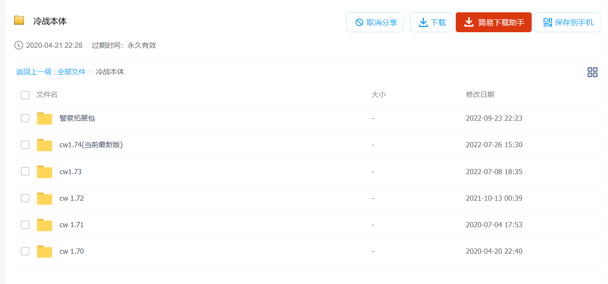
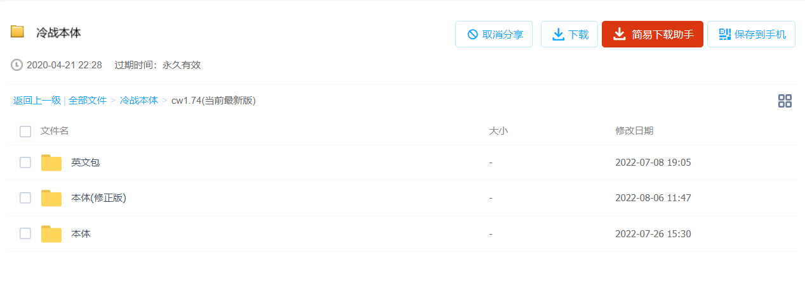
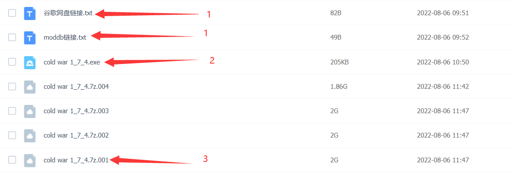
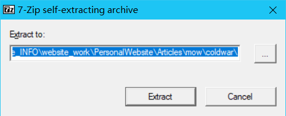
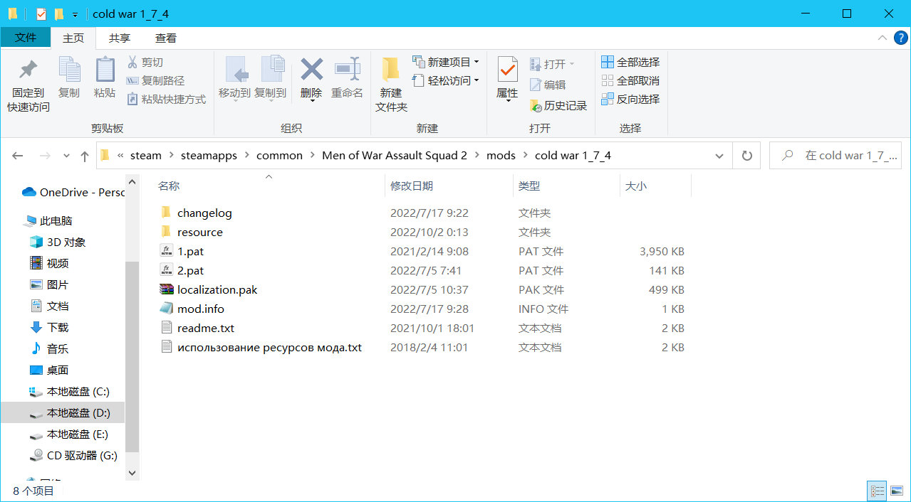
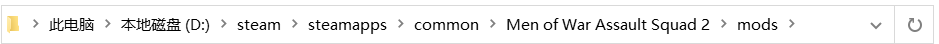
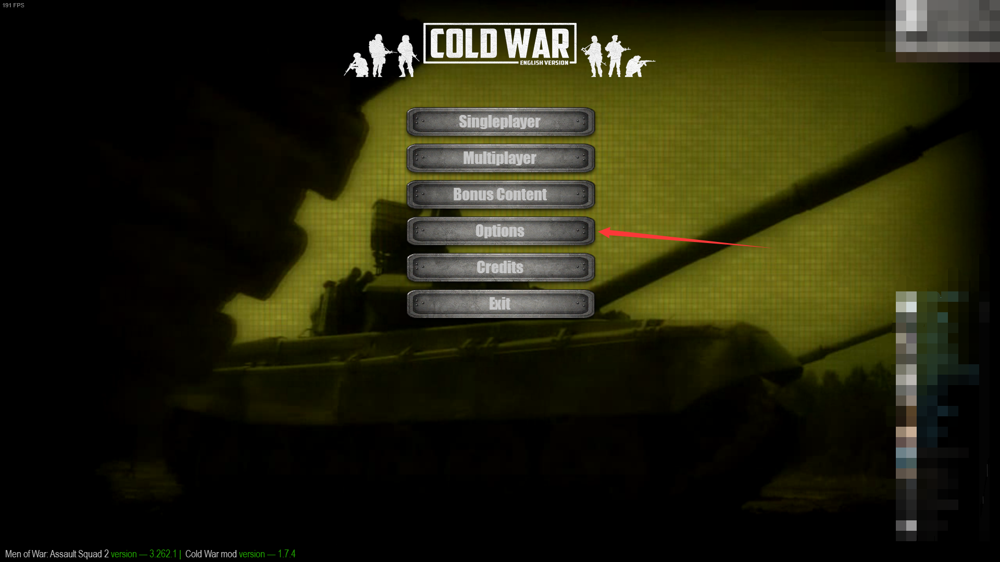
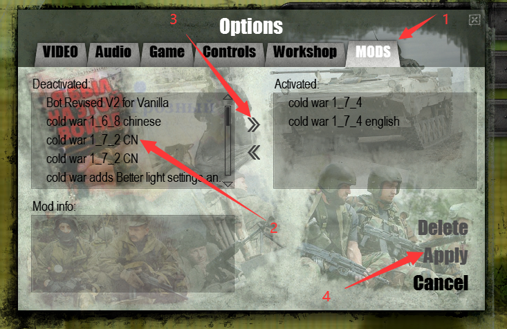

如果你有想问的，或者觉得可以在这里添加的。因为静态网站不好搞评论区，可以在b站相同专栏下回复我。
b站专栏链接：cv20004221
目录
懒得弄样式表了，先拿页内超链接顶着
常见问题
1.如何安装mod？
首先，当你拿到分享链接，如果使用百度云盘下载mod(别的链接以后再写)，那么它会是这样：
点进唯一的一个文件夹后，可以看到这里面有一大堆文件：但是对于大部分玩家，你只需要选择最新版下载，在这幅图里，也就是标注了（当前最新版）的1.74版本。别的所有内容都不需要下载！
进入1.74文件夹，可以看到三个新的文件夹，其中：
本体 =mod本身，也就是主要文件，但是mod本身是俄文的
英文包 =字面意思，就是将mod变成英文的包
修正版 =如果出现修正版，说明在版本号没有变化的情况下mod进行了热更新。所以如果有修正版，我们就下载修正版。
所以，我们下载修正版文件夹内的所有内容，和英文包(暂时，没有官方的中文包)
在下载完成后，你会得到：
我标注了一些文件，这里我们依次解释：
1.这是指向其它可以下载当前版本文件的下载地址：如果你的百度云下载速度很慢，可以尝试通过这里的链接下载。
2.这是一个自解压程序：如果你不熟悉如何使用压缩软件，那么直接双击它！
双击打开后，你会看到：
点击Extract，文件就会解压出来了！
3.这是mod压缩包的第一个分卷：如果你不想通过自解压程序解压，那么打开它，然后选择你使用的压缩软件*的解压键解压它。
这里xxx.xx.001代表它是某种格式的压缩包的第一个分卷，分卷压缩意味着压缩软件会将同一个压缩包分块，拆分成数个文件存储。所以当解压一组分卷压缩的压缩包。你必须保证所有分卷都已经下载并放在同一个文件夹内，然后右击其中一个压缩文件进行解压(而不是把每个都解压一遍！)。另外，如果你不确定你的压缩软件能否识别出这是分卷压缩，那么选择编号为001(即第一个)的分卷解压。
解压之后，你会得到一个文件夹，正常来说，打开之后它应该长这样：
如果你打开之后，发现里面还是一个文件夹，没有其他的东西，那么你需要用里面这个文件夹进行接下来的操作。
 打开游戏的根目录，然后进入名称叫mods的文件夹。
根目录，就是游戏所在的文件夹，关于该游戏相关的文件都装在这个文件夹里。对于在steam购买了该游戏的用户，它应当在xxx/steamapps/common/Men of War Assault Squad 2。
然后将之前确定的文件夹，移动到mods文件夹里。此时游戏外的安装过程就结束了。
最后，我们打开游戏：
点击箭头指向的按钮(如果你是中文，或者俄文页面，根据排列顺序点击第四个按钮，即使它不叫“options”)
点击后，我们：
1.点击mods选项卡（同样的，如果你是中文，或者俄文页面，根据排列顺序点击最后一个按钮）
2.选中名叫“cold war x_xx”的选项卡(这里用1.72版本的中文包做示例。x_xx=你下载的mod版本号)
3.点击向右的箭头(选项卡在左边意味着没有激活，在右边意味着激活)
4.点击apply（同样的，如果...，根据排列...）
如果你要加载英文包，或者中文包，或者冷战的子mod，遵循相同的4个步骤。如果你要取消加载mod，将第三步换为点击向左的箭头。
然后，你就安装成功了！congratulations)))
*如果是rar格式，最好使用winrar就行解压，它可以识别rar文件的分卷，即使随意选择分卷解压也可以正常解压出全部文件。如果是7z格式，而你的压缩软件打不开它，那么尝试下载7zip软件。
2.关于汉化/本地化/翻译问题
首先，本地化=localization，是指一种适配方式，让产品、程序或者文档，适配特定地区语言、文化和市场。
所以大致上所有的“汉化”“翻译”等说法都可以统称为本地化，我们在接下来也都这么叫
然后，冷战mod官方目前只有俄语(原生版本)，英语(英文本地化包)两种本地化版本，没有中文
但是，我已经申请了进行官方本地化，并且目前在进行中（虽然很慢）。
同时，目前完全可以使用第三方，也就是民间本地化。这些本地化链接如下：
1.百度贴吧(未登录) 作者“电疗教父杨永信”分享的版本 支持冷战1.74
2.百度贴吧(已登录) 作者“电疗教父杨永信”分享的版本 支持冷战1.74
3.创意工坊 作者“至柔”,“Dafeic”分享的版本 支持冷战1.68
4.创意工坊 作者“至柔”,“Dafeic”,“Zn”等分享的版本 支持冷战1.72~1.74(评论区找)
注：1.第一二条仅提供了pak文件，你需要直接替换英文包的同名文件，或者自己新建一个空mod放进去
2.如果你知道别的民间汉化地址，或者不希望你的成果在这里被转发，通过b站或者steam联系我，我会进行修改。
3.关于作弊
不存在官方的作弊mod！但是如果你需要可以从第三方，如mow-protal之类的地方下载到，这里不提供链接
另外，如果你真的需要作弊，没有必要使用任何作弊mod，使用游戏的编辑器，它比任何作弊mod都强大。
4.关于多人联机
你可以通过任意形式（局域网，游戏官方服务器，IP直连）和你的朋友进行联机游戏，该mod完全支持联机。
或者，如果你有兴趣，且会英文或俄语中的任意一种，可以进入冷战的discord服务器，然后参加每周都会组织的官方联机游戏。
链接：discord服务器
5.关于游戏版本
目前仅支持战争之人：突击小队2，旧版本支持Call to arms和战争之人突击小队1，战争之人原版，如果需要下载这些版本，或者下载任意旧版本文件，请查找：
1.官方网站 mod版本 所有
2.mow-portal mod版本 1.6.2.2/1.67~1.74
3.百度网盘 mod版本1.69~1.74
4.moddb mod版本 1.73~1.74